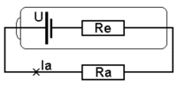

Как измерить внутреннее сопротивление аккумулятора

Если замкнуть плюс и минус аккумулятора, то получим ток короткого замыкания Ie = U / Re , как будто внутри есть сопротивление Re . Внутреннее сопротивление зависит от электрохимических процессов внутри элемента, в том числе и от тока.
При слишком большом токе аккумулятор испортится, и даже может взорваться. Поэтому не замыкайте плюс и минус. Достаточно мысленного эксперимента.
Величину Re можно оценить косвенно по изменению тока и напряжения на нагрузке Ra . При небольшом уменьшении сопротивления нагрузки Ra до Ra‑dR ток увеличивается от Ia до Ia+dI. Напряжение на выходе элемента Ua=Ra×Ia при этом уменьшается на величину dU = Re × dI . Внутреннее сопротивление определяется по формуле Re = dU / dI
Для оценки внутреннего сопротивления аккумулятора или батарейки я добавил в схему измерителя ёмкости резистор 12ом и тумблер (ниже на схеме показана кнопка), чтобы изменять ток на величину dI = 1.2 V / 12 Ohm = 0.1 А . Одновременно нужно измерять напряжение на аккумуляторе или на резисторе R .
Можно сделать простую схему только для измерения внутреннего сопротивления по образцу, показанному на рисунке внизу. Но всё же лучше сначала немного разрядить аккумулятор, и после этого измерить внутреннее сопротивление. В середине разрядная характеристика более пологая, и измерение будет более точным. Получится "среднее" значение внутреннего сопротивления, которое остаётся стабильным достаточно большое время.
Пример определения внутреннего сопротивления
Подключаем аккумулятор и вольтметр. Вольтметр показывает
1.227V . Нажимаем кнопку: вольтметр показывает
1.200V .
dU = 1.227V - 1.200V = 0.027V
Re = dU / dI = 0.027V / 0.1A = 0.27 Ohm
Это внутреннее сопротивление элемента при токе разряда 0.5А
Тестер показывает не dU, а просто U. Чтобы не ошибиться в
устном счёте, я делаю так.
(1) Нажимаю кнопку. Аккумулятор начинает разряжаться, и
напряжение U начинает уменьшаться.
(2) В момент, когда напряжение U достигнет круглой величины,
например 1.200V, я отжимаю кнопку, и сразу вижу величину U+dU,
например 1.227V
(3) Новые цифры 0.027V - и есть нужная разница dU.
По мере старения аккумуляторов их внутреннее сопротивление увеличивается. В какой-то момент вы обнаружите, что ёмкость даже свежезаряженного аккумулятора невозможно измерить, так как при нажатии кнопки Start реле не включается и часы не запускаются. Это получается потому, что напряжение на аккумуляторе сразу снижается до 1.2V и менее. Например, при внутреннем сопротивлении 0.6 ом и токе 0.5 А падение напряжения составит 0.6×0.5=0.3 вольта. Такой аккумулятор не может работать при токе разряда 0.5А, который требуется, например, для кольцевой светодиодной лампы. Этот аккумулятор можно использовать при меньшем токе - для питания часов или беспроводной мышки. Именно по большой величине внутреннего сопротивления современные зарядные устройства, вроде MH-C9000, определяют, что аккумулятор неисправен.
Внутреннее сопротивление автомобильного аккумулятора
Для оценки внутреннего сопротивления АКБ можно использовать лампу от фары. Это должна быть лампа накаливания, например, галогеновая, но не светодиодная. Лампа 60вт потребляет ток 5А.
При токе 100А на внутреннем сопротивлении АКБ не должно теряться более 1 Вольта. Соответственно, при токе 5А не должно теряться более 0.05 Вольта (1В * 5А / 100А). То есть, внутреннее сопротивление не должно превышать 0.05В / 5А = 0.01 Ома.
Подключите параллельно аккумулятору вольтметр и лампу. Запомните величину напряжения. Отключите лампу. Обратите внимание, насколько увеличилось напряжение. Если, допустим, напряжение возросло на 0.2 Вольта (Re = 0.04 Ома), то аккумулятор испорчен, а если на 0.02 Вольта (Re = 0.004 Ома), то он исправен. При токе 100А потеря напряжения будет всего 0.02В * 100А / 5А = 0.4В
С помощью лампочки можно также оценить ёмкость автомобильной батареи .